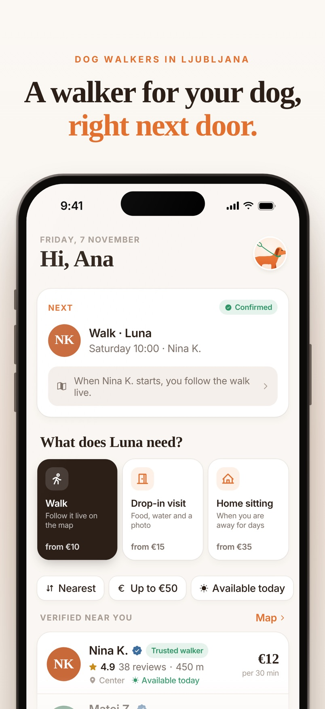
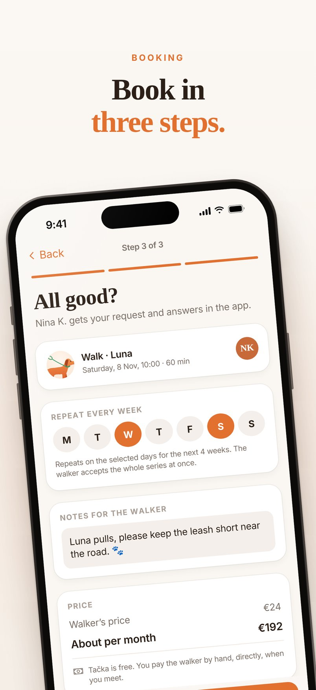
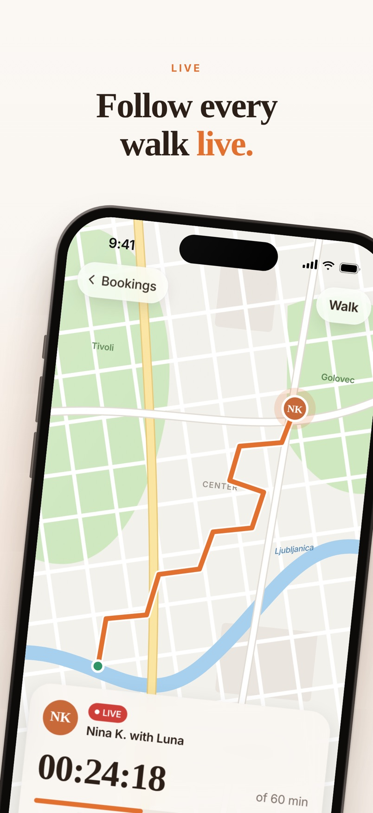
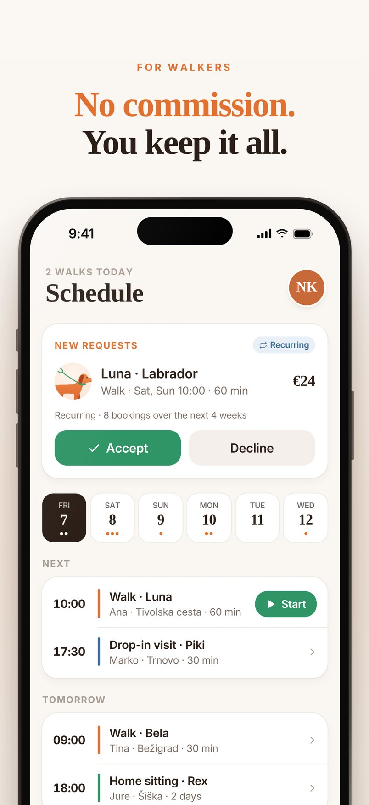

Tačka
Find an ID-verified dog walker or pet sitter anywhere in Slovenia and follow every walk live on a map.
Your dog in good hands
Tačka (Slovenian for “little paw”) connects dog owners with ID-verified dog walkers and pet sitters across Slovenia. Owners find someone nearby, book in three steps, and follow every walk live on a map. Walkers get a profile, a schedule and new clients in their neighbourhood. Tačka is free, takes no commission, and is available in Slovenian and English.
Screenshots






For dog owners
- Every walker verifies their identity before owners can see them
- Find walkers and sitters near you on a list or a map, which shows approximate areas, never home addresses
- Sort by distance or rating, filter by price and who is available today
- Profiles with photo, bio, prices, reviews, completed bookings and the verification badge
- Walks of 30 or 60 minutes, drop-in visits and home sitting for several days
- Book in three steps: who and what, when, confirm
- One-off or recurring bookings, such as Mon, Wed and Fri at noon
- Pet profiles with size, temperament, muzzle and vet notes
- Watch the walk live: timer, the walker's position and the route
- A report after every walk: route, duration, photos, what happened and a note
- Rate and review after every completed walk
- Report a profile or review and block anyone, with reports reviewed by hand
- Sign in with Apple or with email, and switch between owner and walker mode
For walkers and sitters
- Quick identity check with an ID document and a selfie, by our partner Didit
- Public profile with your services, prices and area
- Weekly availability and a 14-day schedule of upcoming walks
- Accept or decline requests
- Leash and muzzle check before every walk
- One tap Start and Stop, with GPS only while the walk runs
- Add photos, ticks and a note during the walk
- Checklist for sittings: water, food and meds
- Drop-in visits and home sitting unlock after five completed bookings rated 4.5 or higher
- No commission: owners pay you directly
How it works
The owner picks a walker and sends a request for a time and a dog. Once the walker accepts, both see each other's phone number and agree on payment between themselves, by cash or bank transfer. Tačka is free, with no payments in the app and no commission. When the walker taps Start, the owner sees a running timer and the walker's live route on the map. Location sharing stops on its own when the walker taps Stop, and the owner gets the walk report.
Requirements
- iPhone with iOS 17 or later
- You must be 18 or older
- Available across Slovenia
- Walkers need location access during a walk and an ID document for the identity check